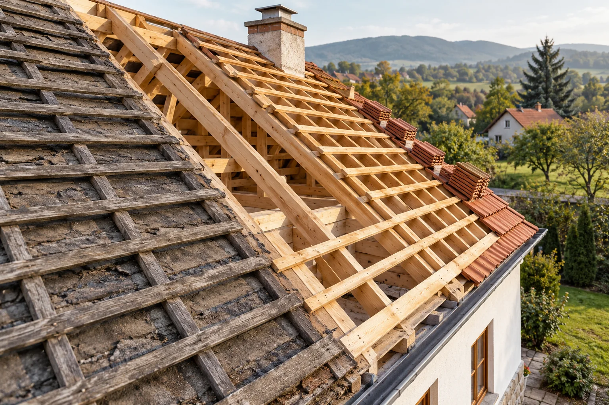

01
A ház védelme felül kezdődik.
Tetőfedés
Új tető fedése vagy meglévő tetőfedés felújítása: a munkát a tető állapotához és a választott fedőanyaghoz igazítjuk. Az egyeztetésen tisztázzuk a bontás, az előkészítés és a fedés feladatait.
- Új tetőfedés kialakítása
- Meglévő fedés javítása, cseréje
- Fedőanyag és csomópontok egyeztetése

AI-ILLUSZTRÁCIÓ